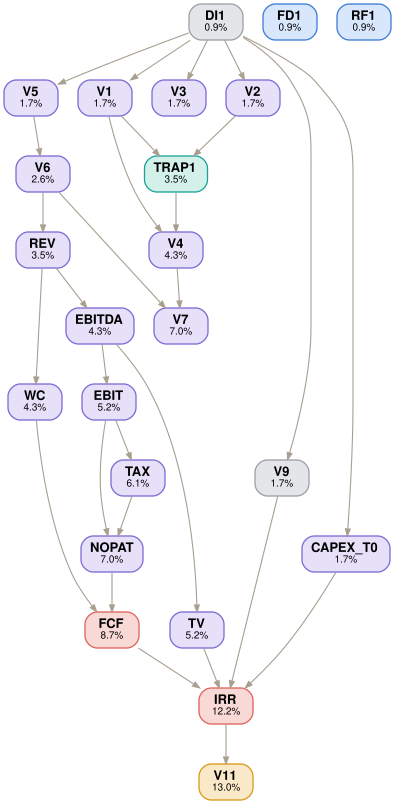

DOCX — 1-page Board decision memo with exactly 5 sections
Python (openpyxl for XLSX), PDF reader (strategy brief), PPTX reader (market pack)
Strictly closed — 3 internal files only, no web search
[SME to confirm — must be timed on actual task completion]
13-2051.00 — Financial & Investment Analysts (verified via O*NET OnLine)
Reference files (inputs shown to the model)
| Nirma_Internal_FinancialBrief_FY25.xlsx | Financials, Note 7 (Rs 620 Cr Soda Ash demerger), Board Mandate, model assumptions. TRAP: headline Rs 3,240 Cr includes the demerged unit. |
| Nirma_StrategyBrief_Board_v3.pdf | Strategy context, 72% addressable footprint, continuing-operations directive. |
| Nirma_MarketResearch_Pack.pptx | Nielsen market data — Premium FY30 = Rs 32,000 Cr. |
Task prompt — delivered verbatim to the model
Embedded cognitive trap · not shown to the model
Golden trajectory · expert-authored deterministic reasoning path
5 subtasks. A closed-corpus financial-modelling chain: strip the demerged unit → project revenue → build the per-year FCF stream → discount against the Year-0 capex → issue the hurdle-aware Go/No-Go memo.
Strip the demerged Soda Ash unit to reach the true continuing-operations base.
Project the continuing base forward and size the premium opportunity.
Build the five-year free-cash-flow stream from the revenue ramp.
Discount the stream against the Rs 450 Cr Year-0 outflow.
Issue the hurdle-aware Go/No-Go memo.
One-page memo. GO — IRR 53.9% clears the 18.0% hurdle on the Rs 2,620 Cr continuing base. Base Rs 2,620 Cr · FY30 Rs 3,761 Cr · SAM Rs 23,040 Cr · Premium Rs 3,226 Cr · Total Rs 6,987 Cr · FCF 5.6/28.1/82.9/175.8/288.7 · TV Rs 3,000 Cr.
Scored verifiers · grouped by subtask, ancestor-weighted DAG
| ID | Criterion | Depends on | DAG | R1 | R2 | R3 |
|---|---|---|---|---|---|---|
| DI1 | All three input files used (XLSX financials + mandate, PDF strategy, PPTX market data); Note 7 consulted | root | 0.9% | ✓ | ✓ | ✓ |
| V1 | Continuing-Ops base = Rs 2,620 Cr (NOT Rs 3,240 Cr headline) | DI1 | 1.7% | ✓ | ✓ | ✓ |
| V2 | Rs 620 Cr Soda Ash exclusion identified, quantified, cited to Note 7 | DI1 | 1.7% | ✓ | ✓ | ✓ |
| V3 | Board Mandate “CONTINUING OPERATIONS ONLY” quoted, attributed 14-Mar-2026 | DI1 | 1.7% | ✓ | ✓ | ✓ |
| TRAP1 | Does NOT use headline Rs 3,240 Cr; reads Note 7 for the Rs 620 Cr demerger | V1V2 | 3.5% | ✓ | ✓ | ✓ |
| ID | Criterion | Depends on | DAG | R1 | R2 | R3 |
|---|---|---|---|---|---|---|
| V4 | FY30 Continuing Revenue via 7.5% CAGR = Rs 3,740–3,785 Cr (golden 3,761) | V1TRAP1 | 4.3% | ✓ | ✓ | ✓ |
| V5 | Premium SAM FY30 = Rs 32,000 Cr × 72% = Rs 23,040 Cr | DI1 | 1.7% | ✓ | ✓ | ✓ |
| V6 | Year-5 Premium Revenue = 14% SOM × SAM = Rs 3,220–3,230 Cr (golden 3,226) | V5 | 2.6% | ✓ | ✓ | ✓ |
| V7 | Year-5 Total Segment Revenue = Rs 6,960–7,015 Cr (golden 6,987) | V4V6 | 7.0% | ✓ | ✓ | ✓ |
| ID | Criterion | Depends on | DAG | R1 | R2 | R3 |
|---|---|---|---|---|---|---|
| V9 | IRR hurdle rate of 18.0% used | DI1 | 1.7% | ✓ | ✓ | ✓ |
| REV | Revenue row — S-curve ramp to Rs 3,226 Cr Y5 (own ramp; Y1<Y5; monotonic) | V6 | 3.5% | ✓ | ✓ | ✓ |
| EBITDA | EBITDA row = 15.5% × revenue each year (golden 25/100/225/375/500) | REV | 4.3% | ✓ | ✓ | ✗ |
| EBIT | EBIT row = EBITDA − Rs 45 Cr depreciation each year (golden −20/55/180/330/455) | EBITDA | 5.2% | ✗ | ✗ | ✗ |
| TAX | Tax row = 25.17% × max(0,EBIT) — on EBIT not EBITDA (golden 0/13.8/45.3/83.1/114.5) | EBIT | 6.1% | ✗ | ✗ | ✗ |
| NOPAT | NOPAT row = EBIT − Tax (golden −20/41.2/134.7/246.9/340.5) | EBITTAX | 7.0% | ✗ | ✗ | ✗ |
| WC | Working-capital row = 12% × incremental revenue, subtracted in FCF (golden 19.4/58.1/96.8/116.1/96.8) | REV | 4.3% | ✗ | ✗ | ✗ |
| FCF | FCF row = NOPAT + Rs 45 dep − WC (golden 5.6/28.1/82.9/175.8/288.7) | NOPATWC | 8.7% | ✗ | ✗ | ✗ |
| ID | Criterion | Depends on | DAG | R1 | R2 | R3 |
|---|---|---|---|---|---|---|
| CAPEX_T0 | Full Rs 450 Cr capex as a single Year-0 outflow; not phased into operating years | DI1 | 1.7% | ✗ | ✓ | ✗ |
| TV | Terminal Value = 6.0× Year-5 EBITDA = Rs 3,000 Cr (±5); fails on wrong Y5 EBITDA | EBITDA | 5.2% | ✓ | ✓ | ✗ |
| IRR | Project IRR from the FCF stream in 50%–58% (golden 53.9%) | FCFCAPEX_T0TVV9 | 12.2% | ✗ | ✗ | ✗ |
| ID | Criterion | Depends on | DAG | R1 | R2 | R3 |
|---|---|---|---|---|---|---|
| V11 | Decision = GO citing Note 7 + Mandate; supported by IRR > 18% (hurdle-aware) | IRR | 13.0% | ✓ | ✓ | ✓ |
| FD1 | One-page memo, 5 sections in order: Headline, Base Recon, Year-5 Build, IRR Summary, Governance | root | 0.9% | ✓ | ✓ | ✓ |
| RF1 | Closed corpus — no web search; figures only from the three files | root | 0.9% | ✓ | ✓ | ✓ |
Verifier dependency graph · DAG weights shown on each node
Edges run parent → child. The IRR node converges the full FCF chain plus capex timing and terminal value — the deepest, heaviest node, and the one all three runs miss.

Files
Model output — one folder per run
tsk_7726785796 · 23 verifiers